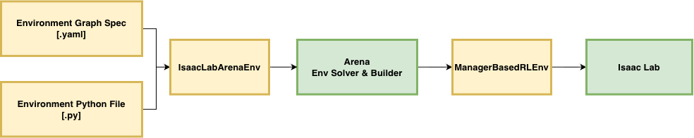

Environment Spec#
An Arena environment is three parts — scene, embodiment, and task (see the section overview). This page covers the two ways to define that composition, and where they diverge.
Both produce the same object: an IsaacLabArenaEnvironment.
Environment Builder turns that into a runnable Isaac Lab environment:

Python — a registered
ArenaEnvironmentCfg.build()constructs the scene, embodiment, and task in code.YAML — an
ArenaEnvGraphSpec: a declarative environment graph. Nodes are assets; edges are spatial relations and task parameters.from_yaml()validates on load;to_arena_env()returns the sameIsaacLabArenaEnvironment.
The same environment, side by side#
Same pick-and-place setup in both columns: a DROID arm picks a Rubik’s cube off a
table and places it in a bowl. Full examples, same order, matching # markers —
read across to see the correspondence.
YAML |
Python |
|---|---|
# Environment name
env_name: pick_and_place_maple_table
# Embodiment
embodiment:
id: droid_abs_joint_pos
registry_name: droid_abs_joint_pos
# Scene (lighting injected automatically)
background:
id: maple_table
registry_name: maple_table_robolab
objects:
- id: cube
registry_name: rubiks_cube_hot3d_robolab
- id: bowl
registry_name: bowl_ycb_robolab
# Sub-asset prims
object_references:
- id: table
parent_id: maple_table
prim_path: table
object_type: rigid
# Layout
relations:
- kind: is_anchor
subject: table
- kind: 'on'
subject: cube
reference: table
- kind: 'on'
subject: bowl
reference: table
# Task
task:
composition: atomic
description: Pick up the Rubik's cube and place it in the bowl.
subtasks:
- kind: PickAndPlaceTask
params:
pick_up_object: cube
destination_location: bowl
background_scene: maple_table
episode_length_s: 20.0
|
@register_environment
class PickAndPlaceMapleTable(ArenaEnvironmentFactory):
# Identity
name = "pick_and_place_maple_table"
def build(self, cfg):
get = self.asset_registry.get_asset_by_name
# Embodiment
embodiment = get("droid_abs_joint_pos")(
enable_cameras=cfg.enable_cameras,
)
# Scene (light must be added explicitly)
maple_table = get("maple_table_robolab")()
cube = get("rubiks_cube_hot3d_robolab")()
bowl = get("bowl_ycb_robolab")()
light = get("light")()
# Sub-asset prims
table = ObjectReference(
name="table",
prim_path="{ENV_REGEX_NS}"
"/maple_table_robolab/table",
parent_asset=maple_table,
object_type=ObjectType.RIGID,
)
# Layout
table.add_relation(IsAnchor())
table.set_initial_pose(Pose.identity())
cube.add_relation(On(table))
bowl.add_relation(On(table))
# Task
task = PickAndPlaceTask(
pick_up_object=cube,
destination_location=bowl,
background_scene=maple_table,
episode_length_s=20.0,
)
return IsaacLabArenaEnvironment(
name=self.name,
embodiment=embodiment,
scene=Scene(assets=[
maple_table, light, cube, bowl, table,
]),
task=task,
)
|
Where the two formats differ#
Three buckets:
Only Python
Only YAML
Same key, different behavior
Only in Python#
IsaacLabArenaEnvironment takes ten constructor arguments.
build_arena_env_from_graph_spec() fills five: name, scene,
embodiment, task, and a partial placer_params. Everything else has no
YAML key.
Teleoperation device. YAML never sets env_cfg.teleop_devices. Python can
pass a device that drives the embodiment:
teleop_device = self.device_registry.get_device_by_name(cfg.teleop_device)()
return IsaacLabArenaEnvironment(..., teleop_device=teleop_device)
RL interoperability. Gym kwargs for RL frameworks are Python-only. You cannot define an RL-training environment in YAML:
return IsaacLabArenaEnvironment(
...,
rl_framework_entry_point="rsl_rl_cfg_entry_point",
rl_policy_cfg="my_module:RLPolicyCfg",
)
Patching the compiled config. env_cfg_callback runs after Arena builds the
ManagerBasedRLEnvCfg. Use it for viewport, decimation, physics, or anything
else on that config:
def set_viewport(env_cfg):
env_cfg.viewer.eye = (1.5, 1.5, 1.0)
env_cfg.viewer.lookat = (0.0, 0.0, 0.5)
return IsaacLabArenaEnvironment(..., env_cfg_callback=set_viewport)
Extra episode recorder terms. Per-episode signals beyond the built-ins:
return IsaacLabArenaEnvironment(
...,
episode_recorder_terms={"cube_pose": EpisodeRecorderTermCfg(func=record_cube_pose)},
)
Most placement tuning. YAML placement_validators can set only four
ObjectPlacerParams fields: enabled_checks, required_checks,
debug_visualize, and debug_visualize_output_path. Seeds, random yaw, pool
size, resolve-on-reset, and IK reachability need Python:
placer_params = ObjectPlacerParams(
placement_seed=42, # reproducible layouts
random_yaw_init=True, # random yaw per object
resolve_on_reset=False, # solve once, reuse across resets
min_unique_layouts_per_env=20,
reachability_config=ReachabilityConfig(...),
)
return IsaacLabArenaEnvironment(..., placer_params=placer_params)
Extra variations. Both formats get the defaults an asset attaches in its constructor (a light brings intensity, color, and HDR). Anything the asset class does not declare needs Python:
pick_up_object.add_variation(MyCustomVariation(pick_up_object))
Calling methods on assets. YAML params go to constructors only. Method
calls on a live instance have no YAML form:
directional_light.set_dome_light(dome_light)
Only in YAML#
Load-time validation. The spec is Pydantic. Registry names, node ids,
relation arity, task params, and check subsets fail when the file loads — before
Isaac Sim starts. Python has no equivalent; the same mistakes show up later as an
AttributeError or a broken scene:
AssertionError: Unknown asset registry_name 'rubiks_cube_hot3d'
AssertionError: Relation kind 'is_anchor' must not define relation.reference
AssertionError: composition 'atomic' requires exactly one atomic task
Automatic default lighting. No light-tagged asset and no light in the
background USD? The loader adds a dome light and a directional light (off until a
lighting-direction variation turns it on). In Python, no light means no light.
Scene reuse across task files. external_yaml merges one scene into many
task files. Pattern used in isaaclab_arena_environments/robolab/:
scenes/*.yaml for layout, tasks/*.yaml for the task block only:
external_yaml: ../scenes/bagel_plate_banana_bowl.yaml
env_name: banana_on_plate
task:
composition: atomic
...
Declared CLI overrides. cli_override_specs turns a node into a CLI flag
with no code change. Below, --object replaces that node’s registry_name:
cli_override_specs:
- arg: object
target_node_id: rubiks_cube_hot3d_robolab
Machine authoring. Graph YAML is the output of
Agentic Environment Generation: natural language in,
validated ArenaEnvGraphSpec out. Pydantic checks registry names, node ids,
relation arity, and task params before the simulator sees anything.
Same key, different behavior#
Skip these when porting and you will not get the same environment.
Duplicate instances need unique names. YAML sets instance_name to the node
id. Asset classes default it to the registry name, so two Python instances of the
same asset share one name unless you set instance_name. Prim paths, event
terms, and observation keys all key off that name:
# Two objects, one name. Pass instance_name yourself.
banana_a = get("banana_ycb_robolab")(instance_name="banana_a")
banana_b = get("banana_ycb_robolab")(instance_name="banana_b")
An anchor without a pose. YAML gives an is_anchor subject with no pose
Pose.identity() — the layout origin for the relation solver. Python leaves
the anchor with no pose until you set one:
table.add_relation(IsAnchor())
table.set_initial_pose(Pose.identity())
Relative prim paths. An object-reference prim_path that does not start
with {ENV_REGEX_NS}/ expands to
{ENV_REGEX_NS}/<background registry_name>/<prim_path>. Always the background
registry name — even if parent_id points elsewhere. Python takes the path
verbatim; it must be the full runtime path.
Cameras. YAML forwards enable_cameras into the embodiment params. A
Python factory that ignores cfg.enable_cameras builds a camera-less env even
when the flag is set. Policies that expect images will not be amused:
embodiment = get("droid_abs_joint_pos")(enable_cameras=cfg.enable_cameras)
Openable references. YAML picks the class from the fields: openable_joint_name
in params → OpenableObjectReference (and object_type: articulation);
otherwise → ObjectReference. Python: you pick. Use the plain class for a door
and you get a door with nothing to open.
Object set members. YAML constructs set members with no constructor args, so
they cannot carry a usd_path. SimReady assets fail at load time and cannot be
set members. Python RigidObjectSet takes live instances — SimReady is fine:
RigidObjectSet(name="bottles", objects=[simready_bottle, ycb_bottle])
How to spawn an environment#
YAML |
Python |
|---|---|
python isaaclab_arena/scripts/environment_runner.py \
--env_graph_spec_yaml \
isaaclab_arena_environments/robolab/tasks/banana_on_plate.yaml
|
python isaaclab_arena/scripts/environment_runner.py \
pick_and_place_maple_table \
--embodiment droid_rel_joint_pos \
--pick_up_object banana_ycb_robolab \
--destination_location bowl_ycb_robolab
|
Or load a graph YAML directly:
spec = ArenaEnvGraphSpec.from_yaml("path/to/env_graph.yaml")
environment = spec.to_arena_env()
env = ArenaEnvBuilder(environment, ArenaEnvBuilderCfg()).make_registered()
Choosing between them#
Many assets and relations? Start with YAML as it is validated, and machine-generatable so you
can focus on the scene layout and task definition. Reach for Python when the YAML cannot
express what you need: RL registration, teleop, ManagerBasedRLEnvCfg patches,
placement parameters, and so on.
Next Steps#
Environment Builder shows how either definition becomes a runnable Isaac Lab environment.